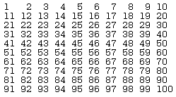
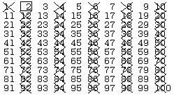
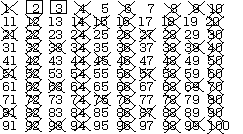
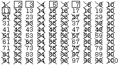
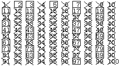

In previous discussion on the greatest common divisor, it was mentioned that the GCD could be found by factoring the two numbers into products of primes, that is numbers with exactly two different positive divisors. The sequence of prime numbers
2, 3, 5, 7, 11, 13, 17, 19, 23, 29, 31, 37, 41, 43, 47, 53, and so on
has long fascinated mathematicians because of their usefulness and their unique properties.
Although this is a sequence, because it can be numbered off in order with the natural numbers, it is possible to prove that there does not exist a formula that can be used to compute the ith term of the sequence. In order to obtain a list of primes, it is therefore necessary to resort to computational methods that produce them one at a time. A possible algorithm for determining if a number is prime is:
let a trial divisor have the value 2 set a boolean Prime to true while Prime or the trial divisor £ the square root of the test number divide the number being tested by the trial divisor if there is no remainder, set Prime to false increment the trial divisor
Once the square root of the test number has been reached, there is no point in checking for more divisors, as there can be a divisor larger than this only if there was also one smaller. Here is some Modula-2 code to implement and test this algorithm:
MODULE CheckPrime;
(* Written by R.J. Sutcliffe *)
(* using ISO Modula-2 *)
(* last revision 1991 03 01 *)
FROM STextIO IMPORT
WriteString, WriteLn, ReadChar, SkipLine;
FROM SWholeIO IMPORT
ReadCard, WriteCard;
FROM RealMath IMPORT
sqrt;
VAR
theNum : CARDINAL;
ans : CHAR;
PROCEDURE IsPrime (testNum : CARDINAL) : BOOLEAN;
VAR
prime : BOOLEAN;
trialDiv, stop : CARDINAL;
BEGIN
IF (testNum = 0) OR (testNum = 1)
THEN
prime := FALSE
ELSE
prime := TRUE;
trialDiv := 2;
stop := TRUNC (sqrt (FLOAT (testNum)));
WHILE (trialDiv <= stop) AND prime
DO
IF testNum MOD trialDiv = 0
THEN
prime := FALSE
END;
INC (trialDiv);
END; (* while *)
END; (* if *)
RETURN prime;
END IsPrime;
BEGIN (* main *)
REPEAT
WriteString ("The number you type will be checked ");
WriteString ("to see if it is prime ==>");
ReadCard (theNum);
SkipLine;
WriteLn;
WriteString ("the number ");
WriteCard (theNum, 0);
WriteString (" is ");
IF NOT IsPrime (theNum)
THEN
WriteString ("not");
END;
WriteString (" prime.");
WriteLn;
WriteString ("Do another? Y/N ");
ReadChar (ans);
SkipLine;
UNTIL CAP (ans) = "N";
END CheckPrime.
This code will do, if all that is required is to test a single number. However, it has two drawbacks. First, it is inefficient. It is not necessary to use every number from 2 through the square root of the number being tested as a trial divisor; only the primes in that range. If a way can be found to do this, the number of computations is greatly reduced. Second, no record or list of primes is kept by this program. A number that is given to it twice must be tested twice. Although this algorithm cannot be replaced by a simple call to a closed formula, it can be improved upon considerably.
A much more efficient method of finding primes is often given in elementary mathematics textbooks. It is called the Sieve of Eratosthenes (after the Greek mathematician) and when done by hand it works like this:
1. Write down the numbers to be tested in convenient rows

2. Cross out 1 and circle the number 2--it is prime.
3. Cross out all multiples of 2; they cannot be prime.

4. The next number not crossed out is a prime; circle it and cross out all its multiples that are not already crossed out. When looking for multiples, start with the square of the number just circled; any lesser multiples have already been crossed out.

5. Repeat steps 3 and 4 until all the numbers less than the square root of the largest number that was written down are either circled (prime) or crossed out (composite).

6. All remaining numbers of those written down are prime, and may now be circled.

A count of the circled numbers reveals that there are 25 primes less than 100. This hand method works very well for checking up to a few hundred numbers, but becomes rather tedious beyond that point. The calculations are, however, very simple to computerize. Using the numbers above for the steps:
1. Create an array of booleans and set them all to true at first. (true = prime) 2. Set array element 1 to false. Now 2 is prime. 3. Set the values whose index in the array is a multiple of the last prime found to false. 4. The next index where the array holds the value true is the next prime. 5. Repeat steps 3 and 4 until the last prime found is greater than the square root of the largest number in the array.
The program that follows tested the numbers to 1000 and printed out the primes it found, ten to a line.
MODULE Sieve;
(* Written by R.J. Sutcliffe *)
(* using ISO Modula-2 *)
(* last revision 1993 03 01 *)
FROM STextIO IMPORT
WriteString, WriteLn, ReadChar;
FROM SWholeIO IMPORT
WriteCard;
FROM RealMath IMPORT
sqrt;
CONST
size = 1000;
VAR
primeFlags : ARRAY [1 .. size] OF BOOLEAN;
numFound,
numToTest, (* the candidate for primality *)
count, lineCount, (* Loop counters *)
mul, (* for multiples *)
max (* largest to test *) : CARDINAL;
key : CHAR;
BEGIN
numFound := 0;
max := TRUNC (sqrt (FLOAT(size)));
primeFlags [1] := FALSE;
FOR count := 2 TO size
DO (* Initialize variables *)
primeFlags [count] := TRUE
END;
(* Find primes *)
FOR numToTest := 2 TO max
DO
IF primeFlags [numToTest]
THEN (* got the next prime here *)
INC (numFound); (* count them as we go *)
mul := numToTest * numToTest; (* start at its square *)
WHILE mul <= size
DO
primeFlags [mul] := FALSE; (* Cross out *)
INC (mul, numToTest) (* Do all multiples *)
END (* while *)
END (* if *)
END; (* for *)
(* now, count the rest *)
FOR numToTest := max + 1 TO size
DO
IF primeFlags [numToTest]
THEN (* got the next prime here *)
INC (numFound); (* count them as we go *)
END (* if *)
END; (* for *)
(* Now print them out 10 to a line *)
lineCount := 0;
FOR count := 2 TO size
DO
IF primeFlags [count]
THEN
WriteCard (count, 6);
INC (lineCount)
END;
IF lineCount = 10
THEN
lineCount := 0; (* reset line count *)
WriteLn; (* and start new line *)
END
END; (* for *)
WriteLn;
WriteString (" ... a total of ");
WriteCard (numFound, 6);
WriteString (" primes ");
WriteString ("Press a key to continue ==> ");
ReadChar (key);
END Sieve.
2 3 5 7 11 13 17 19 23 29
31 37 41 43 47 53 59 61 67 71
73 79 83 89 97 101 103 107 109 113
127 131 137 139 149 151 157 163 167 173
179 181 191 193 197 199 211 223 227 229
233 239 241 251 257 263 269 271 277 281
283 293 307 311 313 317 331 337 347 349
353 359 367 373 379 383 389 397 401 409
419 421 431 433 439 443 449 457 461 463
467 479 487 491 499 503 509 521 523 541
547 557 563 569 571 577 587 593 599 601
607 613 617 619 631 641 643 647 653 659
661 673 677 683 691 701 709 719 727 733
739 743 751 757 761 769 773 787 797 809
811 821 823 827 829 839 853 857 859 863
877 881 883 887 907 911 919 929 937 941
947 953 967 971 977 983 991 997
... a total of 168 primes
NOTES: 1. The value of size could have been set much higher, but there was no need to print any more primes here.
2. In some implementations of Modula-2, the maximum array index range is limited to a number much less than MAX (CARDINAL), and if size were to be greater than this, the program would not compile. This is due to limitations on the total size of a variable.
3. A file of primes could be kept on hand for use in other problems.